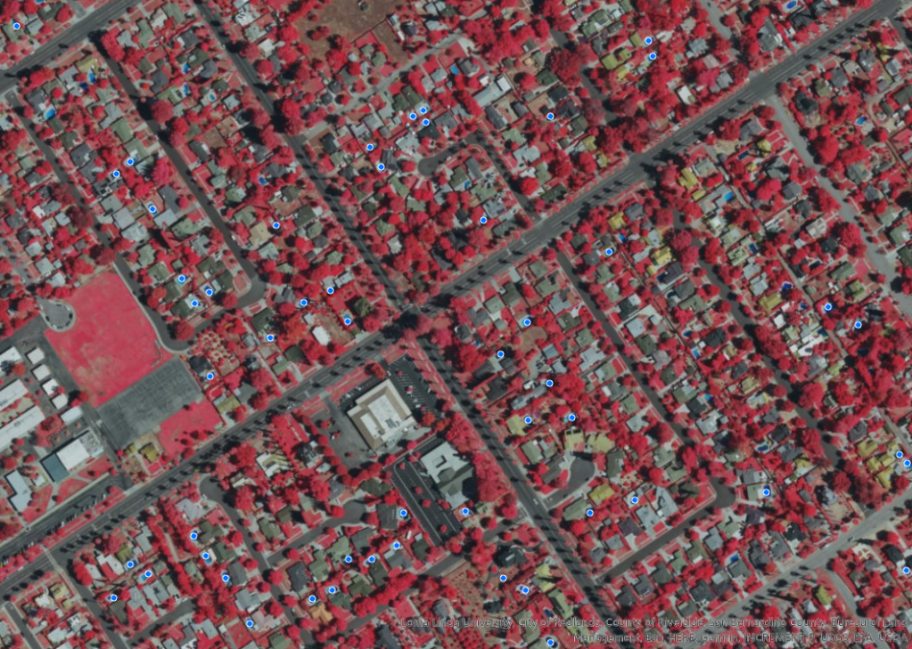
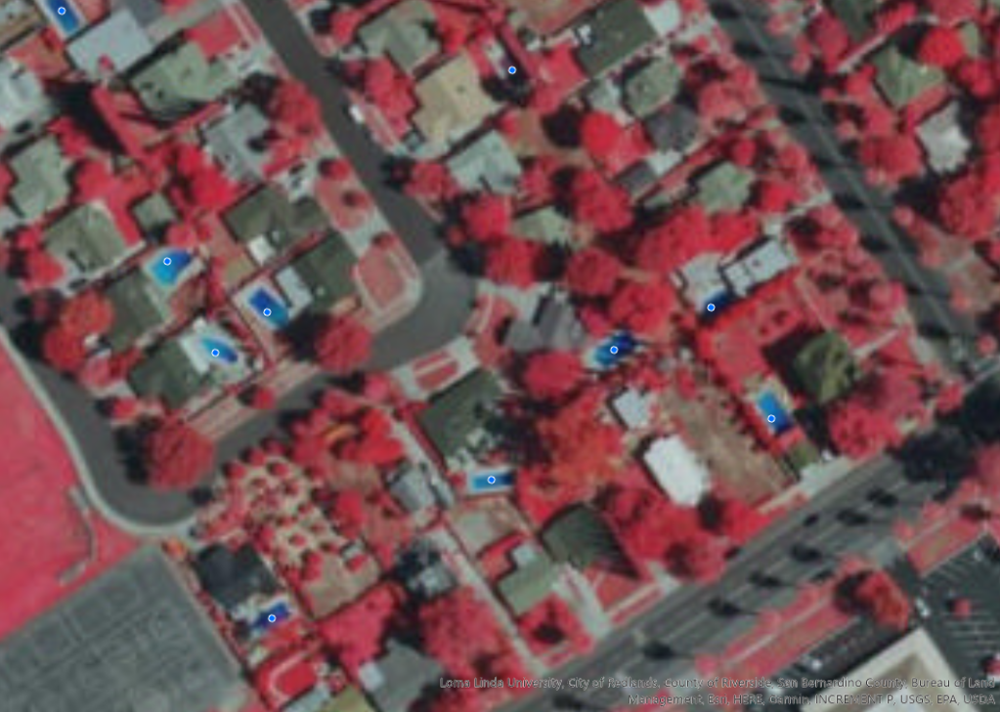
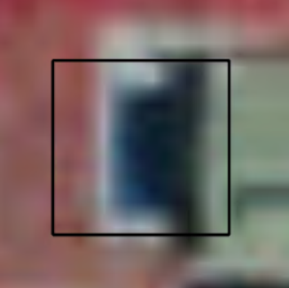

Tax assessors at local government agencies often rely on surveys to estimate property value and calculate property taxes. These surveys are infrequent, which means that there can be some inaccuracy in the assessment records. Swimming pools are an important part of these assessments because they impact the value of the property. To reduce labour hours, I use ArcGIS deep learning tools to detect all swimming pools in a defined area. This information will help tax assessors identify more appropriate values and taxes, which can lead to additional revenue for the community.
I first open an imagery file that shows a false-colour imagery of the interested area. This false-colour uses an infrared band to visualize vegetation in red.
From the imagery tab, I open Label Objects for Deep Learning tool. Using the point option I then digitize a few pools for training samples. These point are then defined as pool with a value of 0.
 In the next step, I will export the training samples into image chips, which use the training sample locations to cut, or chip, the source imagery into defined sub-images that will contain a training sample. These image chips will be used to train the object detection deep learning model.
Using Export Training Data for Deep Learning tool, I exported over a thousand image chips that will be used to train the model. To train the model, I must install specific Python packages. In this step, I will use the Deep Learning Libraries Installer for ArcGIS Pro 2.8 to install the Python packages required to train my deep learning object detection model. When installed, I run the Train Deep Learning Model (Image Analyst Tools) tool with the image chips I exported earlier.
The Train Deep Learning Model tool trains a deep learning model and updates the model definition file (.emd) with this information. I can use this model definition file to detect, or infer, the location of the remaining swimming pools. By reviewing the results, I can assess the model accuracy to determine if I should modify the model or proceed with my analysis. Comparing the ground truth images with the predicted images will also help me determine the accuracy of my model. This model provides a good baseline, predicting most of the pools identified in the ground truth.
After the model is trained, I will perform inferencing. Inferencing uses the trained model to extract information from my imagery. In the Geoprocessing pane, I open the Detect Objects Using Deep Learning (Image Analyst Tools) tool.
Using this model, I can quickly detect the remaining swimming pools, providing tax assessors with the information that they need to identify more accurate property values and taxes.